🎯 Hook – the towers that leak “wasted” energy on purpose
Power stations run enormous cooling towers that vent huge quantities of thermal energy straight into the atmosphere. It looks like waste — and in a sense it is — but no power station could work without doing it. Every heat engine must reject some thermal energy to a cold reservoir; none can turn 100% of the heat it absorbs into work.
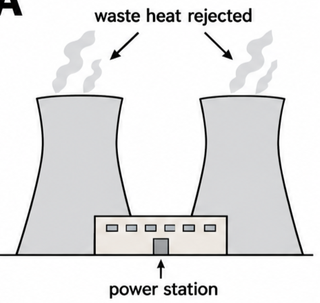
🔄 Cycles, working substances and efficiency
A working substance is the substance (usually a gas) used in thermodynamic processes to do useful work. A cycle is a series of thermodynamic processes that returns a system to its original state, usually repeating continuously.
An expanding gas can do useful work — for example, moving a piston along a cylinder — but it cannot expand for ever. Any practical device transferring thermal energy to mechanical work must move in cycles: repeated expansions followed by compressions, followed by expansions, and so on.
On a \(P\)–\(V\) diagram, the area under an expansion curve is the work done by the gas; the area under a compression curve is the work done on the gas. The difference between the two areas — shown as the shaded region enclosed by a complete loop — is the net useful work done by the gas in one cycle.
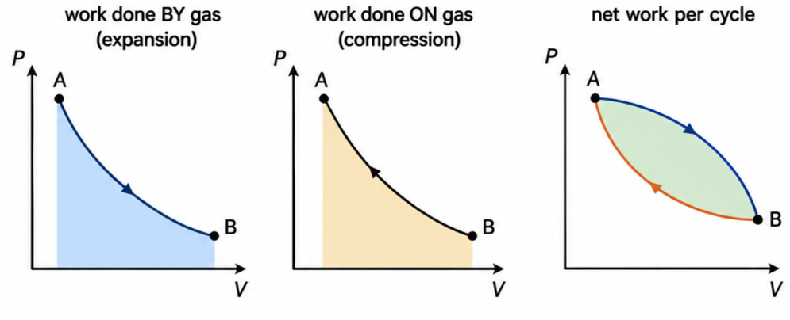
🌡️ Energy flow in a heat engine
A temperature difference, \((T_h - T_c)\), between a hot and a cold reservoir drives a spontaneous flow of thermal energy, which operates the engine. Thermal energy \(Q_h\) flows out of the hot reservoir; \(Q_c\) flows into the cold reservoir; the difference is transferred to useful mechanical work, \(W\).
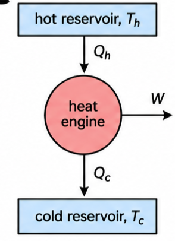
The laws of thermodynamics show that a cyclical process can never convert thermal energy into work with 100% efficiency — this is the Kelvin form of the second law of thermodynamics. Converting mechanical energy into thermal energy (rubbing your hands together) can be 100% efficient; the reverse can never be.
🔵 The Carnot cycle
The thermodynamic cycle that produces the maximum theoretical efficiency is the Carnot cycle — an idealized, reversible, four-stage process: an isothermal expansion (AB), followed by an adiabatic expansion (BC); the gas then returns to its original state by an isothermal compression (CD) and an adiabatic compression (DA). Thermal energy is transferred only during the two isothermal stages; by definition, none is transferred during the adiabatic stages.
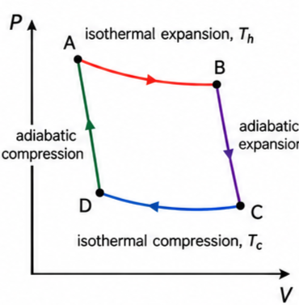
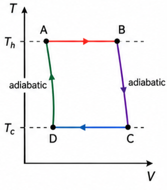
This equation represents the most efficient cycle allowed by the laws of physics — very different from processes limited by friction or other dissipation, which also occur in real heat engines on top of this fundamental limit. An explanation of where the equation comes from is provided in the entropy work of this topic.
📉 Why efficiency has a ceiling – the waterfall analogy
| \(T_h\) / °C | \(T_c\) / °C | \(T_h\) / K | \(T_c\) / K | \(\eta_{\text{Carnot}}\) |
|---|---|---|---|---|
| 100 | 20 | 373 | 293 | 0.21 (21%) |
| 500 | 100 | 773 | 373 | 0.52 (52%) |
| 150 | −150 | 423 | 123 | 0.71 (71%) |
These show that Carnot efficiency is limited by the maximum and minimum temperatures actually available. Extremely high temperatures are technologically difficult to sustain, and — more importantly — we live in a world with an average temperature of about 288 K, which sets a practical floor on \(T_c\).
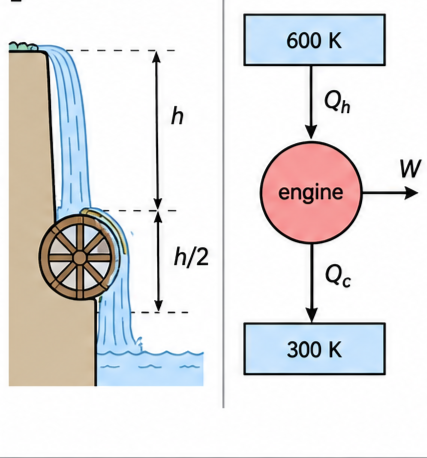
If thermal energy could be transferred between 600 K and 0 K, the theoretical efficiency would be 100% — but that is not possible. Constrained to an outlet temperature of about 300 K, the maximum possible efficiency here is only 50%.
🔃 Heat pumps
Heat pump — a device that transfers thermal energy from a colder place by doing work. It runs like a heat engine in reverse: a work input, \(W\), is used to move thermal energy \(Q_c\) out of a cold reservoir and deliver \(Q_h\) to a hot reservoir. Refrigerators and air-conditioners are heat pumps.
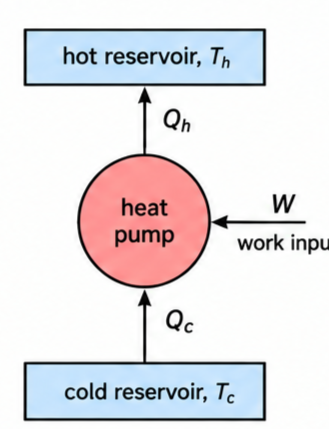
♻️ Reversibility, disorder and entropy
Irreversible process — a process which cannot be reversed, in which entropy always increases. Reversible process — a process that can be reversed so that the system and all of its surroundings return exactly to their original states, with no change in entropy; an impossibility in the macroscopic world. In practice, all macroscopic processes are irreversible.
A swinging pendulum's amplitude slowly decreases as energy dissipates to the surroundings — a video of it run backwards would never be mistaken for the real thing. A bouncing ball shows the same idea more starkly: each bounce transfers more of the ball's ordered kinetic energy (every particle sharing the same velocity) into disordered internal energy (particles vibrating randomly), until it comes to rest. Without outside interference, ordered energy is always irreversibly transferred to disordered energy.
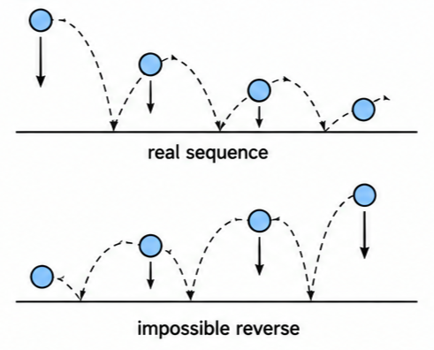
Why is disorder more likely? Imagine distributing 20 candy bars among 10 children entirely at random: the fair, ordered outcome (two each) is far less likely than an uneven one, because there are vastly more ways to be uneven than to be even. Gas molecules behave the same way: there are far more disordered arrangements than ordered ones, so random molecular motion drives any isolated system toward the disordered arrangement — never spontaneously back the other way.
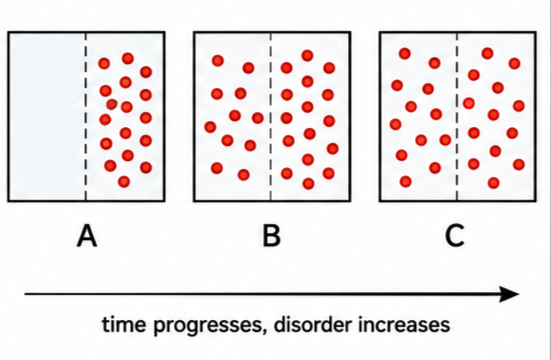
📈 Reading cycle diagrams
| Graph type | Axes (X, Y) | Shape | What to read |
|---|---|---|---|
| General cycle, \(P\)–\(V\) | Volume · Pressure | Closed loop of curves and/or straight segments | Enclosed area = net work per cycle; direction of travel shows whether the gas does work (clockwise) or has work done on it |
| Carnot cycle, \(P\)–\(V\) | Volume · Pressure | Closed loop of exactly 2 isotherms and 2 adiabats | Steeper adiabatic curves link the two isothermal curves; enclosed area is the maximum possible net work between \(T_h\) and \(T_c\) |
| Carnot cycle, \(T\)–\(V\) | Volume · Temperature | Two horizontal lines joined by curved adiabats | The two horizontal levels give \(T_h\) and \(T_c\) directly — feed straight into \(\eta_{\text{Carnot}} = 1 - T_c/T_h\) |
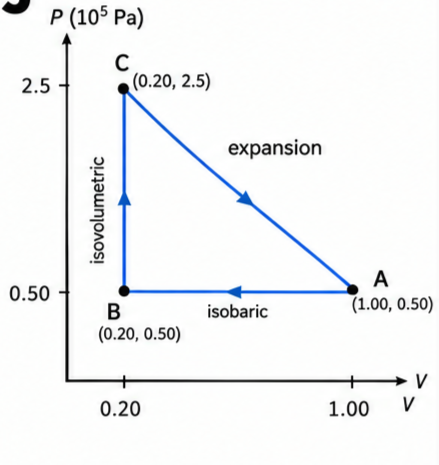
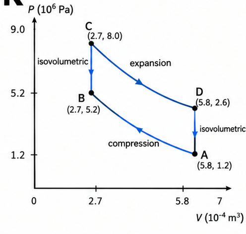
✍️ Worked example 1 – efficiency from two areas (B4.7)
Determine the efficiency of the simple cycle shown in Fig 2 if the area shown in panel (a) was 130 J and the area in panel (b) was 89 J.
✍️ Worked example 2 – the ABCA cycle (B4.8)
Fig 10 shows one simplified cycle, ABCA, of a gas in a particular heat engine, during which \(1.3 \times 10^5\) J of thermal energy flowed into the gas. (a) Calculate the work done during process AB. (b) Name processes AB and BC. (c) Estimate the net useful work done during the cycle. (d) Find the approximate efficiency.
(c) net work \(\approx (1.0-0.20)\times(1.3-0.5)\times10^5\)
(d) \(\eta = \dfrac{W_{\text{net}}}{1.3\times10^5}\)
🌍 Real-world: heat pumps for heating homes
Heat pumps use the fact that an evaporating refrigerant removes thermal energy (latent heat) from its surroundings; that thermal energy is released when the gas is later compressed and condenses back to a liquid. An electrically driven compressor absorbs energy from the cold outdoor air and delivers it, at a higher temperature, indoors. Most heat pumps can be reversed to work as air-conditioners in hot weather.
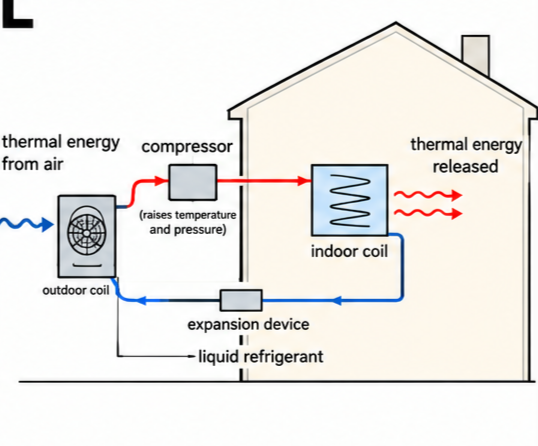
🚀 HL extension – why no real engine reaches η_Carnot
\(\eta_{\text{Carnot}}\) assumes every stage is reversible — infinitely slow, always in near-equilibrium, with no friction and no uncontrolled heat loss. Real pistons have friction, real gases don't stay perfectly in equilibrium during rapid strokes, and some heat always leaks to the surroundings other than through the intended cold reservoir. Every one of these effects is an additional, irreversible source of entropy increase on top of the unavoidable \(Q_c\) the second law already demands.
Challenge: a real engine operating between the same \(T_h\) and \(T_c\) as a Carnot engine will always have efficiency… higher, lower, or the same? Lower — the Carnot value is the theoretical maximum for those two temperatures; any real irreversibility can only reduce the achievable efficiency further, never exceed the Carnot limit.
⚠️ Trap corner – common mistakes
| Misconception | Correct view |
|---|---|
| η_Carnot already accounts for real friction losses | It is the theoretical maximum with no losses at all; friction and other dissipation only make a real engine's efficiency lower still |
| Any four-stage engine cycle between \(T_h\) and \(T_c\) reaches Carnot efficiency | Only the specific reversible sequence — isothermal, adiabatic, isothermal, adiabatic — reaches it; other cycles between the same temperatures are always less efficient |
| A heat pump moving heat from cold to hot violates the second law | It doesn't, because it isn't spontaneous — a work input is supplied. The second law forbids heat flowing cold→hot on its own, not with external work driving it |
| Reversible processes happen in real life if you're careful enough | A truly reversible process is a theoretical idealization; every real macroscopic process is irreversible and increases entropy, however slowly |
Complete the statements:
✓ \(T_h = 350/0.55 = 636\ \text{K}\)
✓ (b) 636 K is the temperature needed for the theoretical maximum; a real engine has additional irreversible losses (friction, imperfect insulation), so a real engine reaching 45% must run between an even wider temperature gap than the ideal calculation suggests.
✓ Cooling towers provide a large surface area and evaporative cooling to reject this waste heat efficiently to the atmosphere.
✓ Without this, the working fluid could not condense and cool back to its starting state, and the cycle could not repeat continuously.
✓ These are joined by two curved adiabatic stages sloping between \(T_h\) and \(T_c\), completing a closed loop — the mirror image in shape of the \(T\)–\(V\) version shown in Fig 5.
✓ \(\eta = \dfrac{1.26\times10^5 - 0.79\times10^5}{1.26\times10^5}\)
✓ \(\eta = 0.37\) (37%).
✓ Note: the source diagram for Fig 3 is a generic labelled schematic with no printed numeric values, so no single numeric answer can be given here — this question demonstrates the method rather than a specific result.
✓ (b) \(n = \dfrac{PV}{RT} = \dfrac{(1.2\times10^6)(5.8\times10^{-4})}{8.31\times320} \approx 0.26\ \text{mol}\)
✓ (c) Using the same \(n\): \(T_B = \dfrac{P_BV_B}{nR} = \dfrac{(5.2\times10^6)(2.7\times10^{-4})}{0.26\times8.31} \approx 650\ \text{K}\)
✓ (d) Estimating with a rectangle of width \(\Delta V \approx 3.1\times10^{-4}\ \text{m}^3\) and height \(\Delta P \approx 6.8\times10^6\ \text{Pa}\) gives area \(\approx 2.1\times10^3\) J.
✓ This area represents the net useful work done by the gas during one complete cycle.
✓ (b) A steep curve down from (100 cm³, \(6.0\times10^6\) Pa) to (200 cm³, \(1.5\times10^6\) Pa).
✓ (c) A vertical line down from (200 cm³, \(1.5\times10^6\) Pa) to (200 cm³, \(0.5\times10^6\) Pa).
✓ (d) A curve back from (200 cm³, \(0.5\times10^6\) Pa) to the starting point (20 cm³, \(6.0\times10^6\) Pa).
✓ (e) Work is done on the gas wherever volume decreases: stage (c) is isovolumetric (no work), so only stage (d), the adiabatic compression, has work done on the gas.
✓ (f) Estimate the enclosed loop area by eye with an equal-area rectangle — of the order of a few hundred joules; the exact value depends on your sketch, and this is the net work done by the gas over the whole cycle.